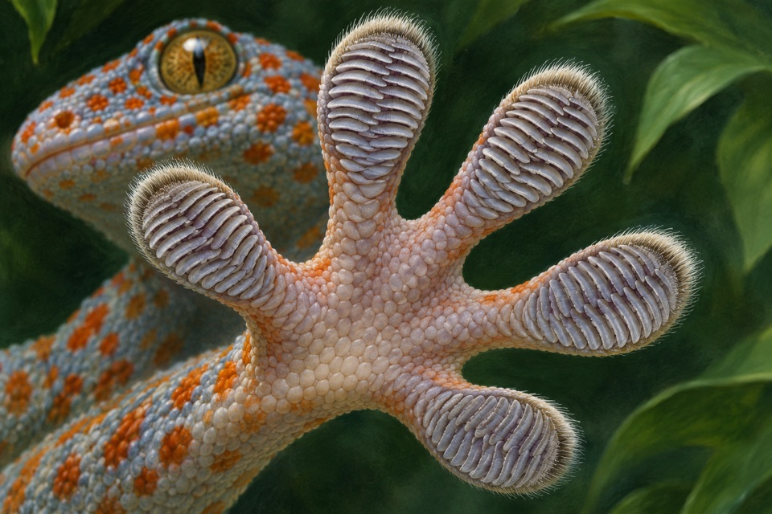

Source-system observation
Single gecko setae generated substantial adhesive forces. Pulling angle and attachment conditions affected detachment.
Single-hair measurements do not establish pad-scale force under contamination, roughness or wear.
Measure contact force and release as a function of loading direction.
Source context. Tokay gecko (Gekko gecko)
Targeted primary source check · Qualified human review pending

Single gecko setae generated substantial adhesive forces. Pulling angle and attachment conditions affected detachment.
Single-hair measurements do not establish pad-scale force under contamination, roughness or wear.